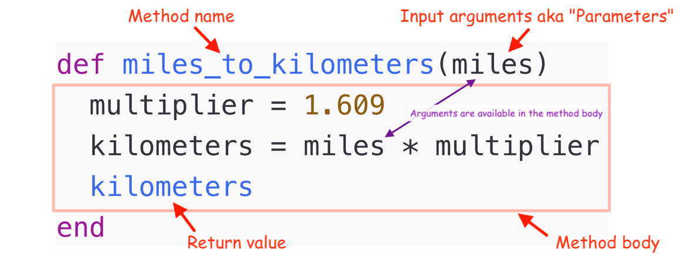

Ruby Monstas
Writing methods
Levels of Abstraction
In this course we will learn about 3 levels of abstraction:
| # | Concept | Deals with... |
|---|---|---|
| 1 | Variables | Data |
| 2 | Methods | Behaviour |
| 3 | Classes | Data + Behaviour |
Today we're tackling level 2!
Levels of Abstraction
With variables we have abstraction for pieces of data.
This means we can give a piece of data a name which we can use to refer to it from then on.
my_name = 'Hansruedi'
favourite_number = 42Levels of Abstraction
Today, looking at methods, we'll get an abstraction for behaviour (code).
This means we'll be able to give a name to a piece of code.
Intro
We already learned how to use methods:
"Popocatépetl".length # => 12
"Eyjafjallajökull".include?("kull") # => true
"Vesuvius".reverse # => "suivuseV"Let's learn how to write our own, shall we?
Why methods?
Let's take a look at this example
my_word = "Sky"
puts "The word #{my_word} has #{my_word.length} letters"
my_word = "Ocean"
puts "The word #{my_word} has #{my_word.length} letters"
my_word = "Forest"
puts "The word #{my_word} has #{my_word.length} letters"
# The word sky has 3 letters
# The word ocean has 5 letters
# The word forest has 6 lettersWhy?
If we want to adjust something in that sentence, we have to change it in three places.
We want to make code fragments reusable, so we don't have to repeat ourselves.
Writing a method
This is how we write a method.
def print_word_statistics(my_word)
puts "The word #{my_word} has #{my_word.length} letters"
endAnd that's how we call ☎️ (execute) it:
print_word_statistics("Sky")
print_word_statistics("Ocean")
print_word_statistics("Forest")
# The word Sky has 3 letters
# The word Ocean has 5 letters
# The word Forest has 6 lettersAnatomy of a method
Anatomy: Method name
- Same rules as for variable names
- May end with
?or!(we'll learn about it later)
def download_file
# code
end
def payment_successful?
# code
end
def send_email!
# code
endAnatomy: Input arguments
- A method can have 0 or more arguments.
- Names follow same rules as variables.
- Arguments are available in the method.
def say_something # 0 arguments
puts "Something"
end
def say_hi(name) # 1 argument
puts "Hi #{name}!"
end
def greet_two(name_a, name_b) # 2 arguments
puts "Hello #{name_a} and #{name_b}!"
end
Anatomy: Method body
- Only variables that are defined as input arguments are available.
- Variables outside the the method cannot be used (yet), we'll learn about it later.
person = "David"
def greet_person
puts "Good day #{person}."
end
greet_person
# /tmp/script.rb:4:in `greet_person': undefined local variable
# or method `person' for main:Object (NameError)
Anatomy: Return values
- A method always has a return value.
- It's the result of the last instruction in the method.
- We can fetch and store it in a variable.
def miles_to_kilometers(miles)
multiplier = 1.609
kilometers = miles * multiplier
kilometers # this is the return value
end
result = miles_to_kilometers(26)
puts "26 miles are #{result} kilometers"
# 26 miles are 41.834 kilometersDefining / Calling
Defining a method doesn't do anything when Ruby sees that piece of code.
Ruby executes it once we call ☎️ it.
def say_hello(person) # This is just the definition
puts "Hello #{person}!"
end
say_hello("Betty") # Calls the method with argument "Betty"
say_hello("Pierre") # Calls the method with argument "Pierre"
# Hello Betty!
# Hello Pierre!Where's the dot?
At the beginning we claimed we learn about writing methods.
"Popocatépetl".length...all we learned is...
do_something(argument)These dot-methods are methods on Objects. Hang on, we'll learn about it later 🤷♀️.
Additional Resources
What questions do you have?